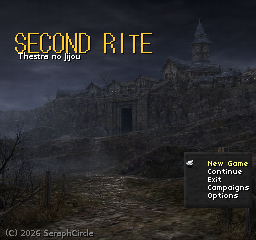
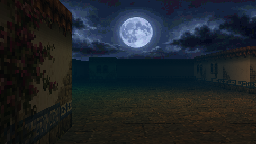
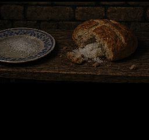
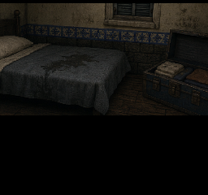

Every route, drop and secret—plus notes from one unfortunate playthrough.

PART 01
Arrival in St. Maria

I came for the same reason as everyone else: there is money under
St. Maria, and being able to summon myself across the Labyrinth’s
dissolving boundary is the one unusual thing I can sell.
Celina records my seal and asks how many creatures I brought before
asking my name. That’s the first hook. The town knows what a Summoner
is worth; it hasn’t decided whether I’m worth knowing.
My playthrough: She sold me a cheap Moa whose contract already said
“Saban.” She wouldn’t say who named him.
What must click
Fantasy: an ambitious outsider buying into a dangerous
local economy—not a chosen hero.
Seed: the rented room and named starter both belonged to a
life the player has inherited without understanding.
I had enough MP to inspect one more branch or walk home comfortably.
Naturally, I chose the branch. INES was written backward at the
end of a chalk line, as though somebody inside the wall had crossed her
own name out.
On the next trip I found a reliquary worth more than everything I
owned. Carrying it meant leaving my emergency Bell Salt. I took the
money.

St. Maria’s crockery, somewhere it should not be.

My room below town. Saban’s feather under the bed.
My playthrough: I spent my last recovery on the rare recruit. Saban covered
the next round and died. Alicia asked why I’d bought feed if I was
coming back without a bird.
What must click
Fantasy: leading fragile, individual companions through a
return journey as important as the descent.
Choice: greed is the inventory slot chosen over a
creature’s safety, not a morality prompt.
I came out expecting the usual town. The light was amber, the forge
cold, and name-cards hung from roofs that had been bare twenty minutes
earlier. Nobody warned me. It works because I remember what these
streets normally look like.
My playthrough: Yukio looked at my party and said, “You came back one voice
short.” I disliked them immediately.
The first bell names the living. The second names those who remain
below. Something under St. Maria answers with a third, though the tower
has only two. Afterward I find an unclaimed lantern marked
THESTRA in my own handwriting.
I can light it, hide it, give it to Yukio, or leave it dark. Much
later, whoever keeps it should be the person capable of recognizing a
false version of me.
What must click
Fantasy: the town has acquired enough reality to surprise
me with a life and grief of its own.
Foil: Yukio sees the same evidence but refuses my emotional
reading of it.
Build debt: festival presentation state, schedules,
summon-specific lanterns, a four-way choice and a late identity
callback.